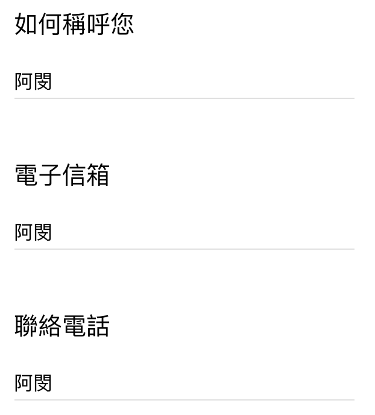
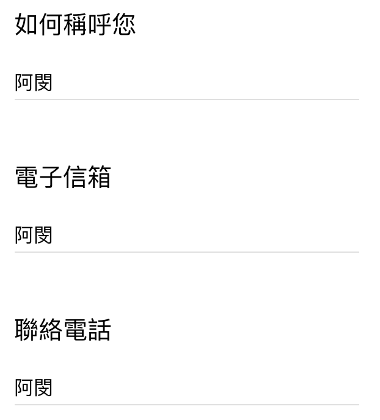

Posted by Daisy 洪宇萱 · Dec 05, 2018 at 5:17 PM 線上課程問卷-實體與數位學習行為 hihi老師： 我們目前線上學習的研究問卷出來囉 再請老師看一下～https://goo.gl/forms/w2NFKDDOI03sDLDB3（大家如果有空也歡迎試著填填看喔！） *預計明天會發布，為期一週的問卷調查 本問卷的目的是為了解： 會購買線上課程的使用者背景 使用者對於線上課程的期望 使用者對於線上課程經驗，使用後之狀況或落差原因 問卷進行統計整理後，後續會與hahow做進一步的討論～ —— 【服務設計課前問卷】也預計在這幾天會出來 到時再與老師您確認課前問卷內容喔！ Comments & Events Ann 姜瓔育, 碩士生 填完了～以下小小的feedback供參考問卷目的｜如果希望了解「會購買線上課程的使用者背景」 那是否可以先問「是否會購買線上課程」（前提），再了解背景？（如果不會購買線上課程，後面也不用問了XD） 好奇～這題是幫Hahow問嗎？Hahow有沒有做過研究調查 or 數據分析？ 不然感覺我們比較需要知道「對服務設計有興趣的使用者的自主學習習慣」之類的～ 問卷目的｜對於線上課程的期望 感覺這部份沒有問到太深入 「請問您職業背景是」那題 「設計相關」可以精確一些？（如果是針對服務設計課程的話啦） 捨去一些沒有需要的細分（像是農業、工業） 學生也可以了解是什麼學科背景 [stage2 學習習慣] & [stage3 數位學習 購買經驗] 好像沒有分的很明確 ex. 你曾於哪些「線上學習平台」購買過課程？ 感覺是 [stage3 數位學習 購買經驗] Q當你購買一門課程後，每堂課程會花費多少時間來學習？ * 1)有計畫性規劃在一定時間內要完成幾堂課程 2)碎片式學習，有時間才會看，不會規劃學習時間 3)購買課程觀看幾堂後發現不符合期待，放棄學習 選項和題幹（多少時間）感覺不太符合XD 選項感覺是在回答「如何規畫學習時間」之類的～（但選項3又不是） 你願意花多少金額，購買一門課程呢？ * 大家對「一門課程」的定義不太一樣（主題、類別、堂數、時數等等） 答案可能會沒有參考價值，也不好回答 其他小問題 對你來說，線上課程中最能專注的學習長度為？ *（選項：15 ~ 30分鐘以內 30 ~ 1小時以內 XD） 如果前面題目選否的話，後面那些問「購買後學習經驗」的題目還是必填欸XDDDD 最後基本資料可能要限定一下格式，不然可以亂填XD  image.png 29.9 KB • Download 我也要電影票～～～ 🤩 謝姜～～～ Dec 05, 2018 at 5:56 PM Notified 7 people Hsien-Hui Tang 唐玄輝, 總監 是不是要集中在設計學習上? 略調整 Dec 06, 2018 at 3:56 AM Notified 7 people Daisy 洪宇萱, 碩士生 謝謝姜的建議～果然是要給大家填一次才能突破盲點啊回答的選項和順序會再做調整，也會在問題下多做註解 這份當初在規劃時，是針對「整體的數位學習經驗」為考量在問的， 下一份才會針對「服務設計」做課前問卷 (還在趕工中!!) 所以背景職業、使用體驗才會問得比較廣，希望蒐集到大家對於線上課程的不同想法 如果第一份針對在設計學習上，可能會漏掉很多其他使用者的想法～ p.s.但的確問太廣也會不夠聚焦，這點我們會再做內部討論好好處理! (>_<) 謝謝老師&姜～ 如果有任何想法也歡迎持續給我們建議! 感恩恩! Dec 07, 2018 at 1:32 AM Notified 7 people
Ann 姜瓔育, 碩士生 填完了～以下小小的feedback供參考問卷目的｜如果希望了解「會購買線上課程的使用者背景」 那是否可以先問「是否會購買線上課程」（前提），再了解背景？（如果不會購買線上課程，後面也不用問了XD） 好奇～這題是幫Hahow問嗎？Hahow有沒有做過研究調查 or 數據分析？ 不然感覺我們比較需要知道「對服務設計有興趣的使用者的自主學習習慣」之類的～ 問卷目的｜對於線上課程的期望 感覺這部份沒有問到太深入 「請問您職業背景是」那題 「設計相關」可以精確一些？（如果是針對服務設計課程的話啦） 捨去一些沒有需要的細分（像是農業、工業） 學生也可以了解是什麼學科背景 [stage2 學習習慣] & [stage3 數位學習 購買經驗] 好像沒有分的很明確 ex. 你曾於哪些「線上學習平台」購買過課程？ 感覺是 [stage3 數位學習 購買經驗] Q當你購買一門課程後，每堂課程會花費多少時間來學習？ * 1)有計畫性規劃在一定時間內要完成幾堂課程 2)碎片式學習，有時間才會看，不會規劃學習時間 3)購買課程觀看幾堂後發現不符合期待，放棄學習 選項和題幹（多少時間）感覺不太符合XD 選項感覺是在回答「如何規畫學習時間」之類的～（但選項3又不是） 你願意花多少金額，購買一門課程呢？ * 大家對「一門課程」的定義不太一樣（主題、類別、堂數、時數等等） 答案可能會沒有參考價值，也不好回答 其他小問題 對你來說，線上課程中最能專注的學習長度為？ *（選項：15 ~ 30分鐘以內 30 ~ 1小時以內 XD） 如果前面題目選否的話，後面那些問「購買後學習經驗」的題目還是必填欸XDDDD 最後基本資料可能要限定一下格式，不然可以亂填XD  image.png 29.9 KB • Download 我也要電影票～～～ 🤩 謝姜～～～ Dec 05, 2018 at 5:56 PM Notified 7 people
Daisy 洪宇萱, 碩士生 謝謝姜的建議～果然是要給大家填一次才能突破盲點啊回答的選項和順序會再做調整，也會在問題下多做註解 這份當初在規劃時，是針對「整體的數位學習經驗」為考量在問的， 下一份才會針對「服務設計」做課前問卷 (還在趕工中!!) 所以背景職業、使用體驗才會問得比較廣，希望蒐集到大家對於線上課程的不同想法 如果第一份針對在設計學習上，可能會漏掉很多其他使用者的想法～ p.s.但的確問太廣也會不夠聚焦，這點我們會再做內部討論好好處理! (>_<) 謝謝老師&姜～ 如果有任何想法也歡迎持續給我們建議! 感恩恩! Dec 07, 2018 at 1:32 AM Notified 7 people
問卷目的｜如果希望了解「會購買線上課程的使用者背景」
問卷目的｜對於線上課程的期望
「請問您職業背景是」那題
[stage2 學習習慣] & [stage3 數位學習 購買經驗] 好像沒有分的很明確
Q當你購買一門課程後，每堂課程會花費多少時間來學習？ *
你願意花多少金額，購買一門課程呢？ *
其他小問題
（選項：15 ~ 30分鐘以內 30 ~ 1小時以內 XD）
我也要電影票～～～ 🤩
回答的選項和順序會再做調整，也會在問題下多做註解
這份當初在規劃時，是針對「整體的數位學習經驗」為考量在問的，